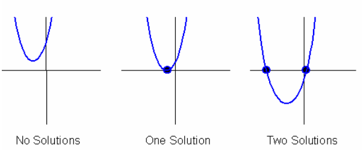

5.1 - Solving Quadratic with Factoring
A quadratic function's "solutions" are the x-intercepts of the graph. We can find the solutions by graphing the parabola but there are actually much more conventional methods. In unit 5.1, we will take a look at the factoring method.
The factoring method will be using the zero factor property.

Solving Quadratic Equation with Factoring Example: x2 + 5x + 6 = 0

Factor the Equation
We can just ignore the zero for now and factor x2 + 5x + 6 = 0.
x2 + 5x + 6 = 0 --> (x + 3)(x + 2) = 0

Split the equation
(x + 3)(x + 2) = 0
x + 3 = 0 and x + 2 = 0
Solve the equation
So for x + 3 = 0, we can just move 3 to the other side which makes it x = -3. Same for the other equation, x + 2 = 0 turns into x = -2.
The two solutions to this equation would be -2, and -3.
Practice Questions
What are the solution(s) to the quadratic equations?
1. x2 - 4x + 3 = 0
2. x2 + x + 12 = 0
3. x3 - 3x = 2x2
5.2 - The Quadratic Forumla
This is probably the most important formula we will ever learn in high school. We will be using this forumla quite a lot even outside of pre-calculus. It is the fastest way to calculate the solution to quadratic equation.

A list of practice problems will be given later on where you may practice using any method to solve quadratic equations.
5.3 - Solving Quadratic Equation (Square root property)
Solving quadratic equations don't always have to be factoring or using the quadratic fomrula! You may also use the square root property which we encoutered before during unit 1. Rather than factoring or plugging the numbers into an equation, this method allows us to use square roots to solve.
Practice Questions
You may try out different methods that were taught during this unit.
5.4 - Discriminant
As you may have noticed, some quadratic equations will have varying amounts of solutions ranging from 0 - 2. The discriminant is a value that can be used to determine whether a quadratic equation has 0 real solution, 1 real solution or 2 real solutions.
Here are the solutions visually if you were to graph these quadratic equations.
